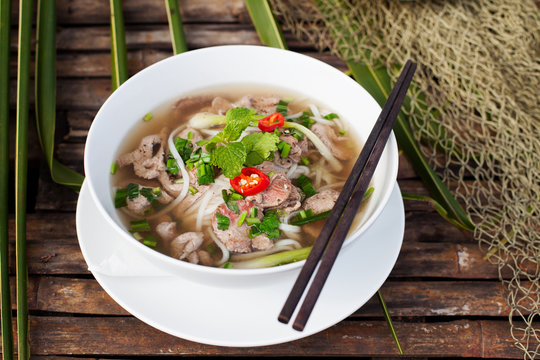
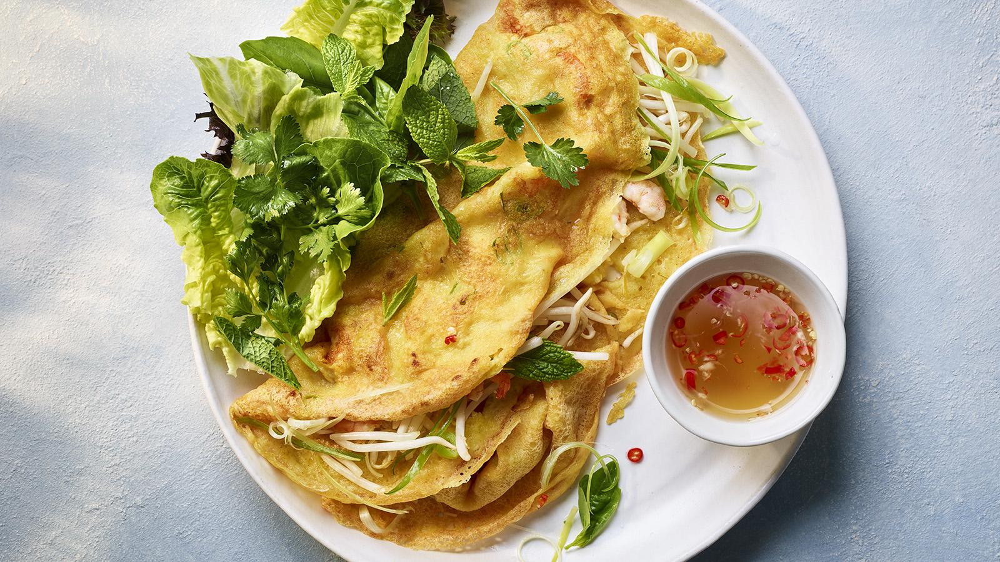

Why I Enjoy Cooking
Cooking is something I enjoy because it allows me to slow down and be creative while still being productive. It’s a hands-on activity where small decisions can completely change the outcome.
I like experimenting with flavors, learning new techniques, and improving through practice, which is similar to how I approach learning technology.
Types of Food I Like to Cook

- Home-style comfort meals
- Asian-inspired dishes
- Simple pasta and rice-based meals
- Quick meals that fit a busy schedule
Another Dish I Enjoy Making

Bánh xèo is one of my favorite dishes to make because it requires timing, attention, and balance between texture and flavor. It’s challenging but rewarding.
Cooking Skills I’m Developing
I’m still learning, but over time I’ve become more confident in the kitchen. Some skills I continue to work on include:
- Knife safety and efficiency
- Meal planning and prep
- Balancing seasoning and flavors
- Following and adapting recipes
Connection to My Career Goals
Cooking has taught me patience, organization, and problem-solving. If something goes wrong, you troubleshoot, adjust, and try again. Those same skills apply to cybersecurity and technical work.